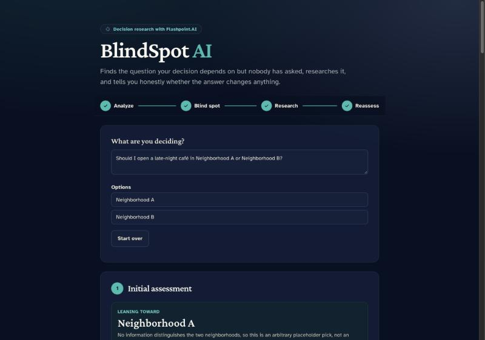
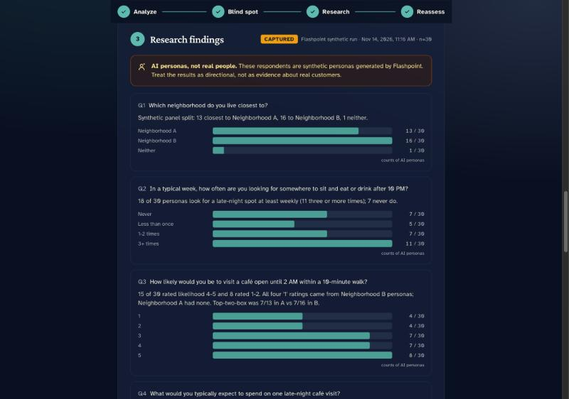
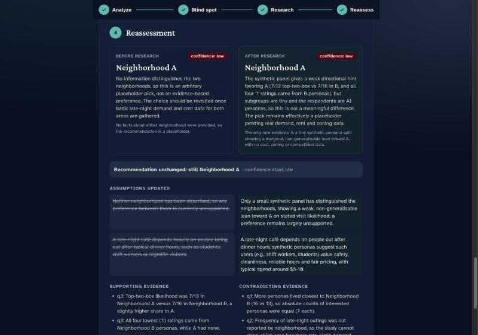

AI Agents · Decision Research
An AI decision-research agent that recognizes what it does not know. It names the one unknown a decision hinges on, researches it with a Flashpoint synthetic panel, and tells you honestly whether the answer changes anything.
Ask an AI "should I open my cafe in Neighborhood A or B?" and it will answer confidently, even though the one thing that matters, whether people near each location would actually show up at 11 PM, is in no public dataset. The confidence hides a blind spot. BlindSpot AI is built to find that blind spot, go and ask about it, and then say plainly whether the evidence is strong enough to change the recommendation.
It runs in four steps. First it frames the decision: the criteria, a provisional recommendation, the assumptions it rests on (each tagged either an assumption or public information), and the blind spots ranked by impact and how answerable they are. For the chosen blind spot it writes a short, neutral research plan, then runs that plan as a survey on a Flashpoint synthetic panel and returns structured findings: counts per option and open-text themes with quotes. Finally it reassesses, comparing before and after: did the recommendation move, which assumptions shifted, and what the confidence should be now.
The point is restraint. In the cafe demo a 30-persona panel leans slightly toward A, but the gap is only a handful of personas, so the recommendation stays A and the confidence stays low. The agent found the blind spot, asked about it, and declined to overclaim. Every step is badged to show where its content came from, and every synthetic result is labeled as AI personas rather than real people.
Built for the Hack the Unreachable hackathon (Flashpoint.AI), Self-Improving AI track, with Dolly Lokhandwala.
Highlights
It separates what it assumes from what it actually knows, tagging each input as an assumption or public information, and ranks the unknowns by impact and how answerable they are.
For the chosen blind spot it drafts an objective, a target segment, a sample size, three to five questions, and notes on keeping the wording unbiased.
The plan runs as a survey on a Flashpoint synthetic panel and returns structured findings: counts per option and open-text themes with quotes.
It compares before and after, showing whether the recommendation changed, which assumptions moved, what supports or contradicts them, and the confidence on each side. When the evidence is weak, it says so.
Each result is badged LIVE, CAPTURED, or DEMO FIXTURE, and synthetic respondents are labeled AI personas, not real people, with charts titled accordingly.
Every Claude response is parsed against a zod schema, and every API body and response is validated, so a malformed model reply fails loudly instead of leaking into the UI.
The app
The cafe decision, carried from framing through research to a reassessment that keeps its confidence low.

All four steps complete on the cafe A versus B decision.

Research: a captured Flashpoint synthetic run, badged CAPTURED, with the AI-personas notice shown next to the counts.

Reassess: before versus after on Neighborhood A. The recommendation holds and confidence stays low, because the gap is small.
Approach
Claude frames the decision: criteria, a provisional recommendation, the assumptions it rests on tagged as assumption or public information, and blind spots ranked by impact and answerability.
For the selected blind spot, Claude writes a short, neutral research plan: objective, target segment, sample size, three to five questions, and neutrality notes.
The plan runs as a survey on a Flashpoint synthetic panel and returns structured findings: counts per option and open-text themes with quotes.
Claude compares before and after: whether the recommendation changed, which assumptions moved, the supporting and contradicting evidence, the limitations, and the confidence on each side.
A Next.js front end talks to API routes where every body and response is checked with zod, Claude is called through structured parsing, and each result carries a provenance badge back to the browser.
At a glance
Read the code, the architecture notes, and the honesty labels on GitHub.